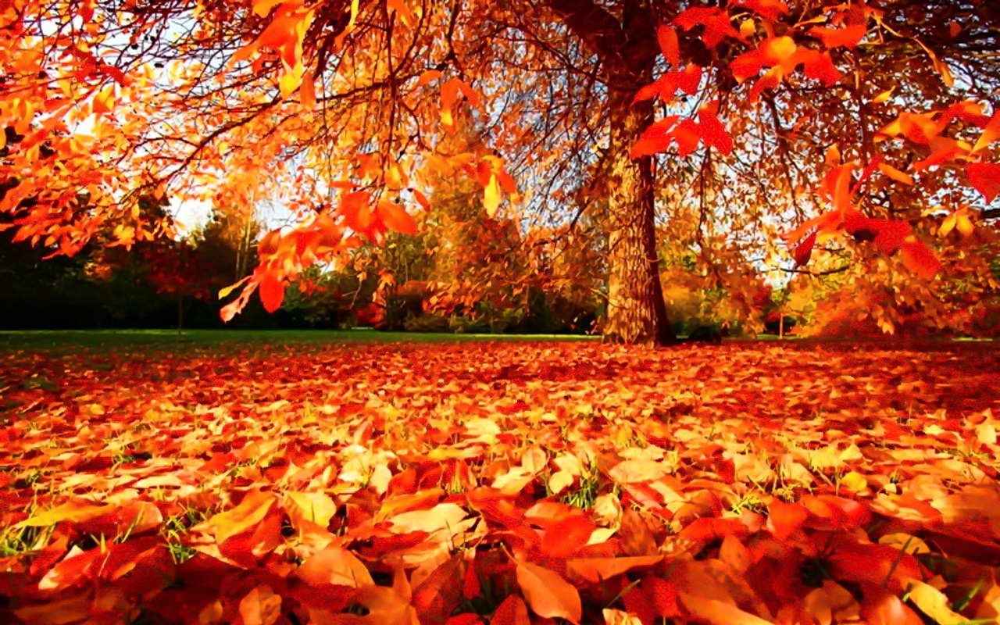
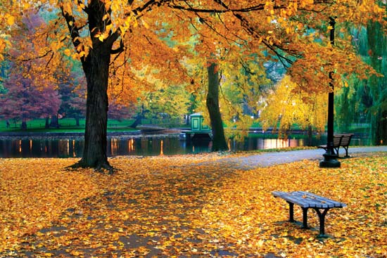
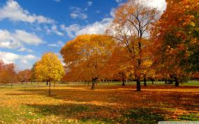

Gold autumn
Autumn, also known as fall in American and Canadian English,
[1]
is one of the four temperate seasons.
Autumn marks the transition from summer to winter, in September
(Northern Hemisphere) or March (Southern Hemisphere), when the
duration of daylight becomes noticeably shorter and the temperature
cools down considerably. One of its main features is the shedding of
leaves from deciduous trees.
Some cultures regard the autumnal equinox as "mid-autumn",
while others with a longer temperature lag treat it as the start
of autumn.
[2]
Meteorologists (and most of the temperate countries
in the southern hemisphere)
[3]
use a definition based on months,
with autumn being September, October and November
in the northern hemisphere,
[4]
and March, April and May in the
southern hemisphere.
In North America
,
autumn is usually considered to start with the
September equinox (21 to 24 September)
[5]
and end with the winter
solstice (21 or 22 December).
[6]
Popular culture in North America
associates Labor Day, the first Monday in September, as the end of
summer and the start of autumn; certain summer traditions, such
as wearing white, are discouraged after that date.
[7]
As daytime
and nighttime temperatures decrease, trees shed their leaves.
[8]
In traditional East Asian
solar term, autumn starts on
or around 8 August and ends on or about 7 November.
In Ireland
, the autumn months according to the national
meteorological service, Met Éireann, are September, October
and November.
However,according to the Irish Calendar,
which is based on ancient Gaelic traditions, autumn lasts throughout
the months of August, September and October, or possibly a few days
later, depending on tradition[citation needed].
In Australia and New Zealand
,
autumn officially begins on
1 March and ends on 31 May.
Tourism


Although colour change in leaves occurs wherever
deciduous trees are found, coloured autumn foliage is noted in
various regions of the world: most of North America, Eastern Asia
(including China, Korea, and Japan)
, Europe, the forest of
Patagonia, eastern Australia and New Zealand's South Island.
Eastern Canada and New England are famous for their autumnal
foliage,[23][24] and this attracts major tourism (worth billions
of US dollars) for the regions.